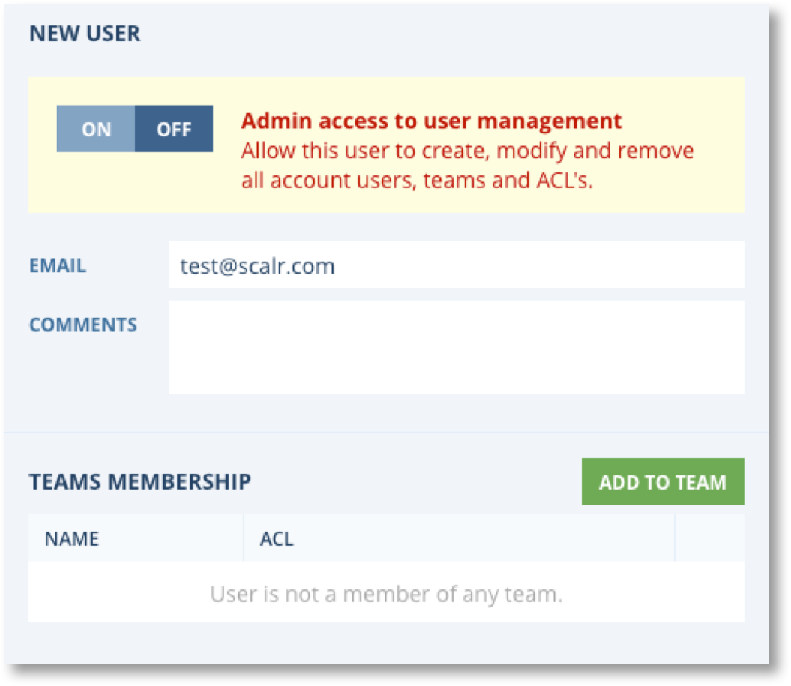
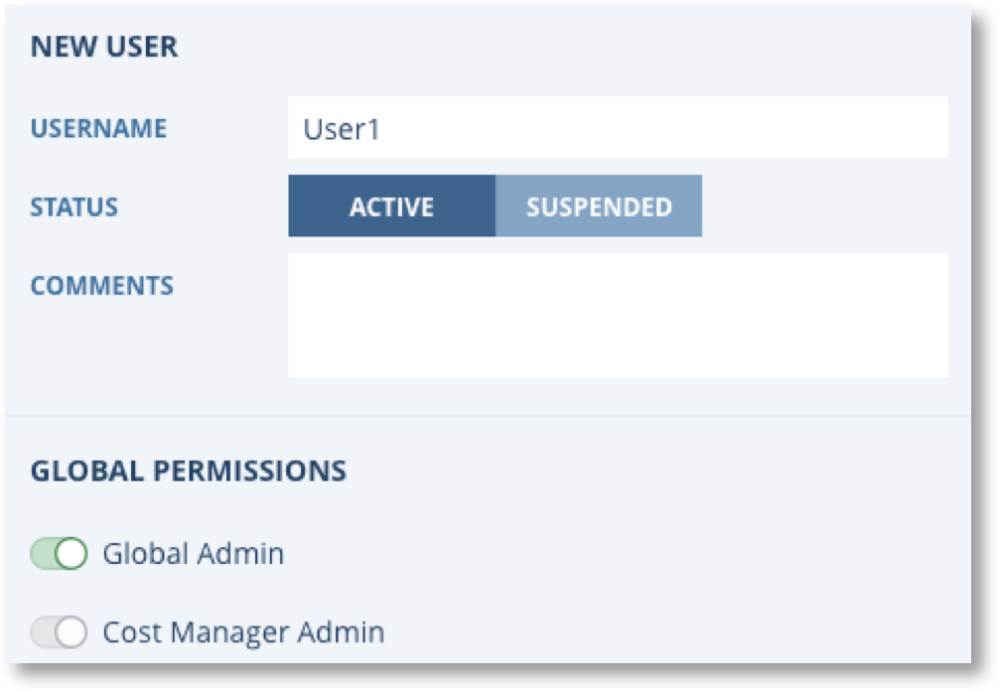
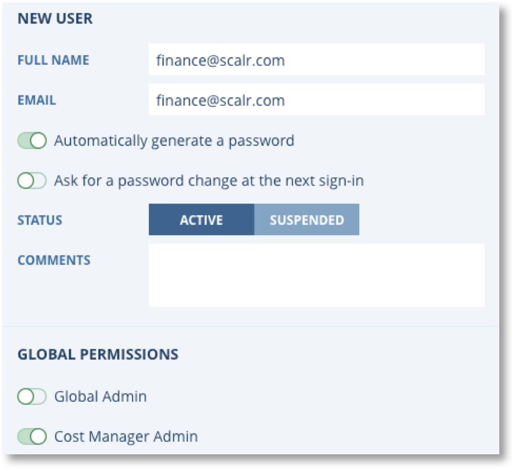
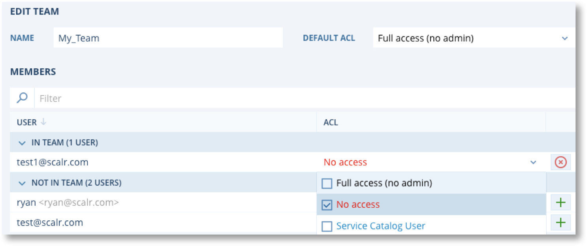
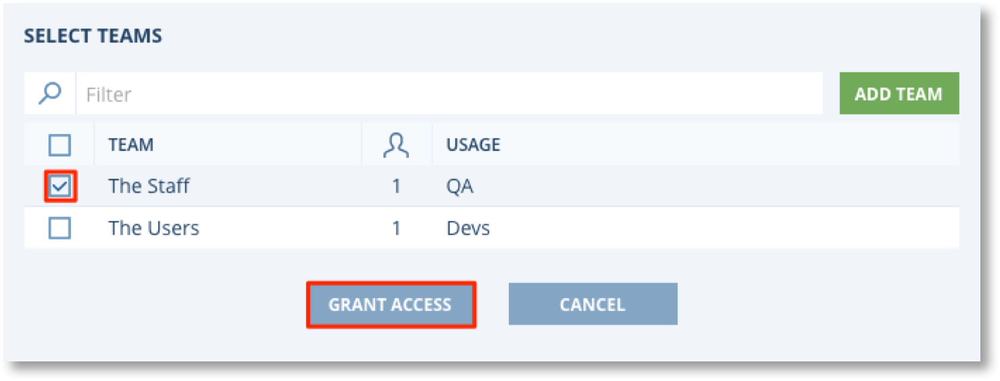

Users and Teams¶


To gain access to Scalr, a user must first be added and then linked to a team. Teams are given access to Scalr Environments, not individual users (except for admins). There are two types of users and teams:
- Local - All users and teams are stored, updated, and managed in Scalr.
- External - All users and team are stored and managed in an external system like AD or LDAP. To find out more about AD or LDAP integration, please go to the Enable LDAP Authentication page.
Configuring Users¶
Scalr Local Users¶
To add an end user to a Scalr account, first ensure you are logged into the Account scope as either an Administrator or as the Account Owner. Next, click on the main Scalr menu on the top left  , and go down to Users. Click on New User:
, and go down to Users. Click on New User:
{kind=link}
On the right hand side of the Users Panel, you will see an entry section for New User. Admin Access is automatically turned off, but can be switched to on by toggling the on/off button. Enter the user’s Email Address. Click Add To Team to add the new user to a selected Team if desired. After clicking save, the user will receive an email letting them know they have access and they can set their password at the first login (see more about email here: Enable Email Integration). Their status will automatically default to Active; however, you can click on Suspended if you do not want the user to be immediately Active upon adding them to Scalr. Comments may be added for the new user as well. Click on Add User when finished.
{kind=link}
Externally Authenticated Users¶
If you are using an external system to manage your teams, you do not have to manually add users. The users will gain access to Scalr when their AD/LDAP team is added into Scalr. The user will appear in Scalr after that user logs in for the first time. See more about adding Teams below.
Global Admins¶
A Global Admin is generally someone who will add accounts, creates cost centers, and manage Scalr in general. Out of the box, Scalr has one Global Admin named “admin”, this user can add more admins if needed. To add a Global Admin, go to the Scalr scope and click on Users. Once you are on the Users page, click on New User, enter the information that is prompted for, and then make sure you tick the Global Admin radio button:
{kind=link}
By default a Global Admin will inherit the rights of a Financial Admin as there is no higher permission than Global Admin.
Financial Admins¶
A Financial Admin is someone who mainly cares about the Cost components of Scalr from a Scalr scope perspective. This user will create Cost Centers, Budgets, Pricing List, Reports and more. They will not see any other aspect of Scalr:

To add a Financial Admin, go to the Scalr scope and click on Users. Once you are on the Users page, click on New User, enter the information that is prompted for, and then make sure you tick the Financial Admin radio button:
{kind=link}
Configuring Teams¶
Scalr Local Teams¶
To add a team to a Scalr account, first ensure you are logged into the Account scope as either an Administrator or as the Account Owner. Next, click on the main Scalr menu on the top left , and go down to Teams.
{kind=link}
Enter a Name for your Team and select a Default ACL from the drop-down menu (Find out more about ACLs here: Access Control Lists). If existing users are present in Scalr, you will be able to click on the plus sign next to a member in the table to attach them to the Team. Otherwise, you will need to add a user before members can be attached to your new Team.
Once a member has been added to the Team, they will automatically have the same Access Rights as granted through the Default ACL selection. The members section of the Teams tab will show who is currently added to the Team. To change the access rights for a specific Team member, click on the ACL dropdown and select a different setting.
{kind=link}
Externally Authenticated Teams¶
To add an externally managed team, first ensure you are logged into the Account scope as either an Administrator or as the Account Owner. Next, click on the main Scalr menu on the top left , and go down to Teams. For externally managed teams, all you have to do is add the team name into the New Team field seen above and apply the ACL that should be assigned to it. On save, Scalr will verify the team with LDAP/AD and if no errors are received it will be added to Scalr. As explained above, users will automatically be added to Scalr after they log in for the first time.
Adding Teams to Environments¶
Now that you have created Teams, they must be added to an Environment for their users to be able to do anything. If you add a team, but do not add that team to an environment then the users will receive an error when they try to log in.
To add a team to an Environment, first ensure you are logged into the Account scope as either an Administrator or as the Account Owner. Next, click on the main Scalr menu on the top left , and go down to Environments. Click on the Environments tab and then the Environment you would like to add the Team to. The currently selected Environment will appear in light gray, as shown below by the “Test Environment” selection below.
{kind=link}
In the Grant Access Panel, tick the checkbox next to the desired Team and then Grant Access. You may also Add Teams here.
{kind=link}
Click save and the team will now have access to the environment that it was added to.
Note
Note the ACL setting for each team within the Environment. ACLs may be left as the Team default, or changed on a per-environment basis. This allows for Teams to be reused between different Environments with different levels of access for each Environment. This method of access permission management saves on team administration effort and allows for a more logical and granular configuration of team permissions within their various Environments.